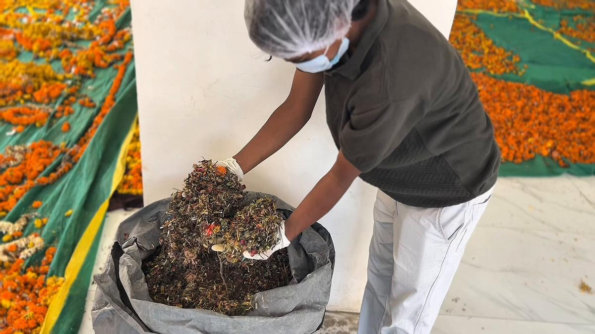

Blog
Notes on recycling puja flowers, our collection drives and floral waste in Hyderabad.

How to hand over your puja flowers
Four small habits that make used flowers easy to recycle.

Hyderabad's flower waste, in four numbers
How much floral waste the city produces, and why it is worth collecting.
What happens to the flowers after Ganesh visarjan?
Garlands usually follow the idol into the water. This year many of them took a different route.